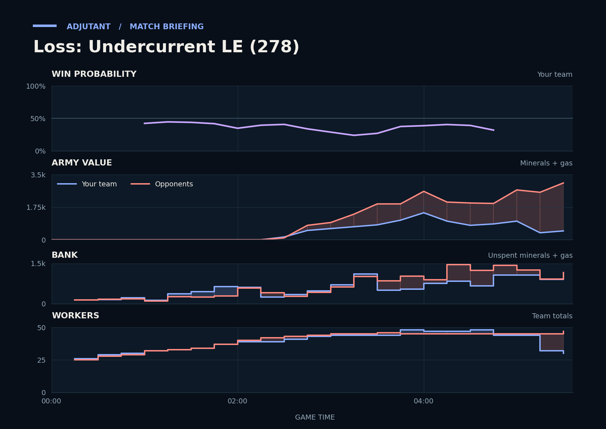

Loss: Undercurrent LE (278)
Provisional debrief. The full report (timeline, insights and analysis) is being generated.

**Loss.** You lost because you went into the last fight at TakeTheTip's natural with half the opponents' army value.
**Why**
- 1:30–3:15: Their army value hit about 1,400, far above yours, leaving them twice your army going into the last fight.
- 3:49–5:33: You lost more army than they did, and 20 workers died at TakeTheTip's natural before the gg.